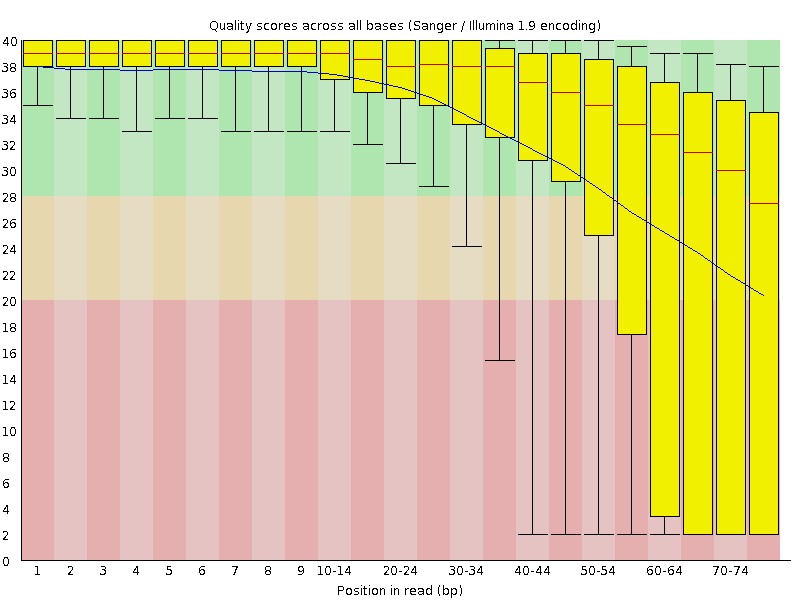
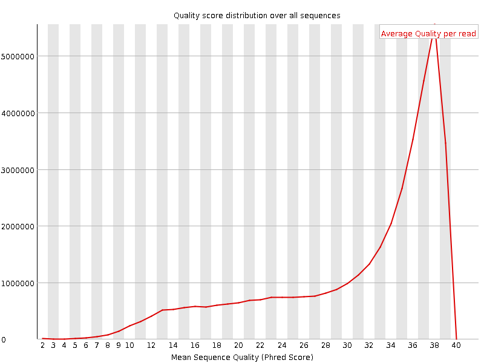
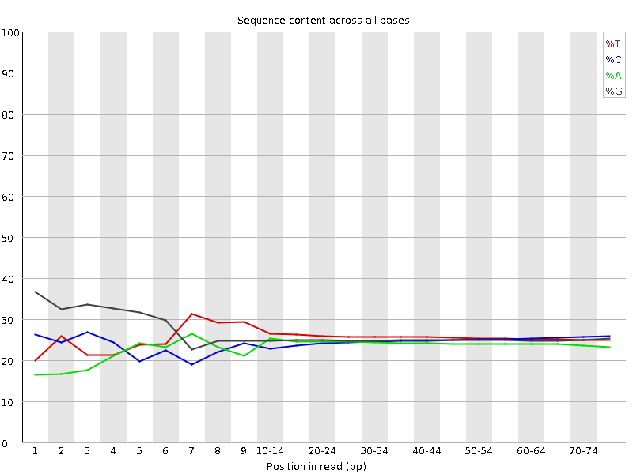
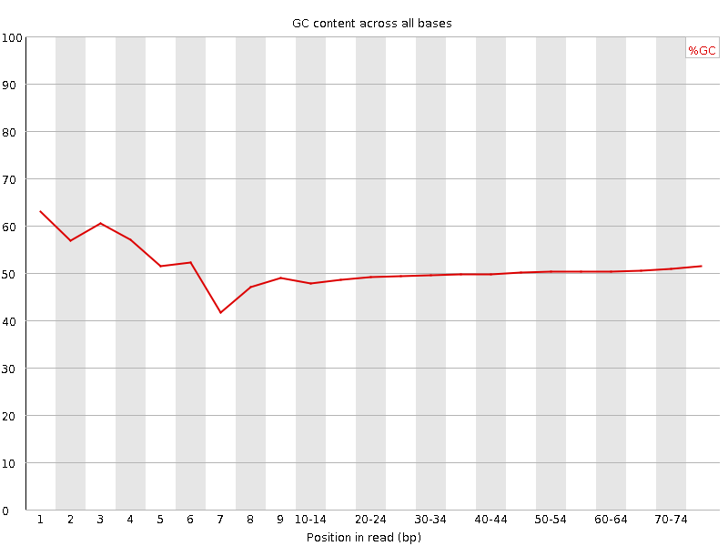
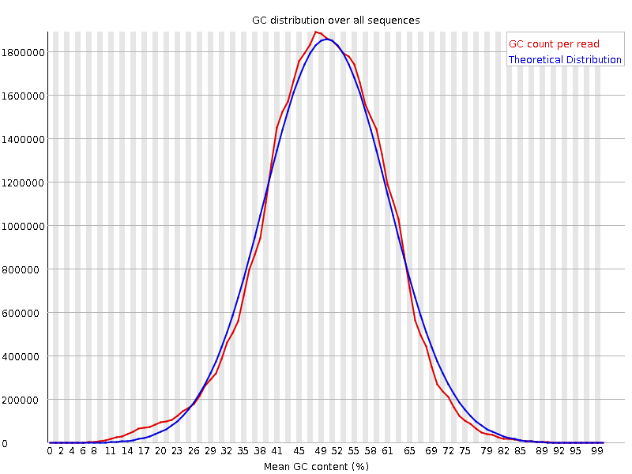
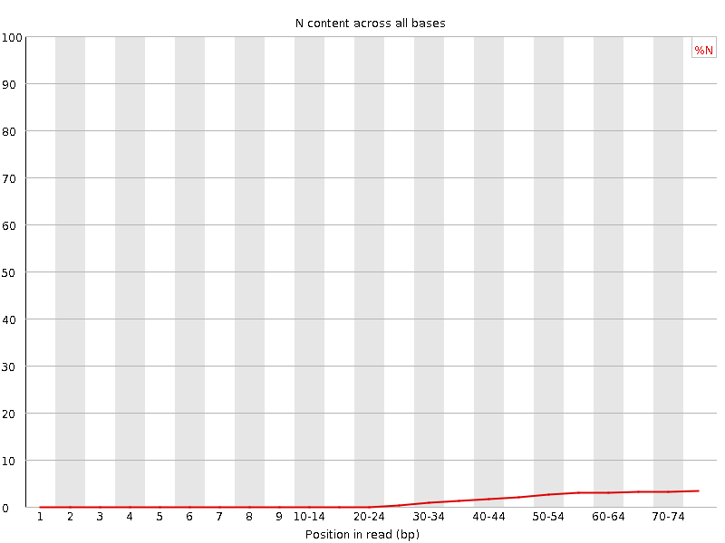
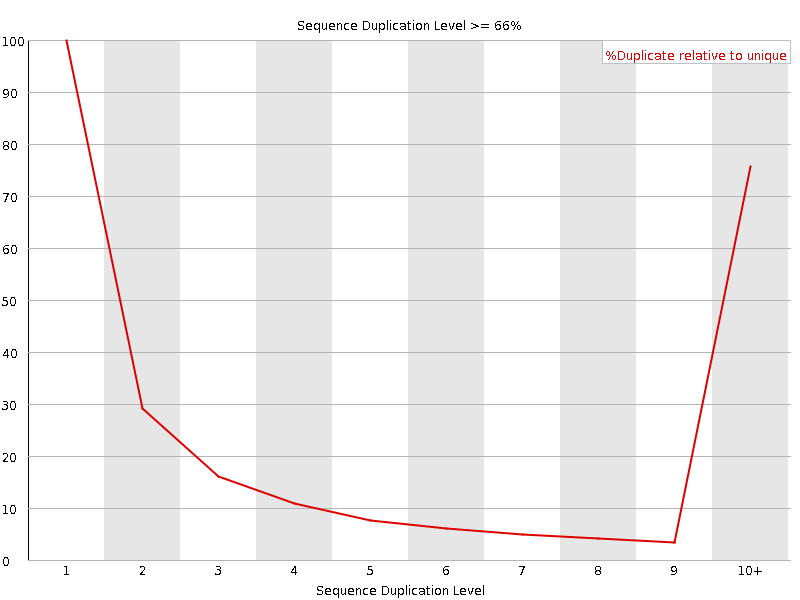
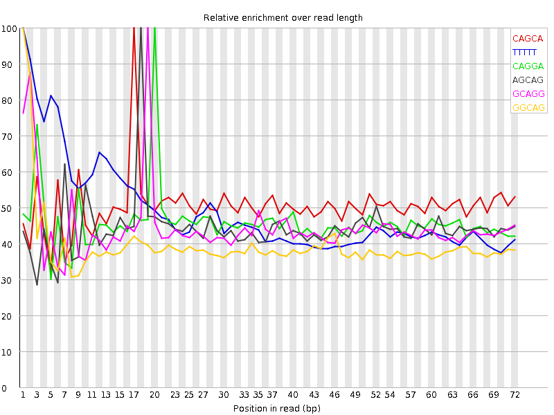

![[OK]](Icons/tick.png) Basic Statistics
Basic Statistics
| Measure | Value |
|---|---|
| Filename | SRR307902_1.fastq |
| File type | Conventional base calls |
| Encoding | Sanger / Illumina 1.9 |
| Total Sequences | 39652007 |
| Filtered Sequences | 0 |
| Sequence length | 76 |
| %GC | 50 |
![[FAIL]](Icons/error.png) Per base sequence quality
Per base sequence quality

Per sequence quality scores

![[WARN]](Icons/warning.png) Per base sequence content
Per base sequence content

Per base GC content

Per sequence GC content

Per base N content

Sequence Length Distribution

Sequence Duplication Levels

Overrepresented sequences
No overrepresented sequences
Kmer Content

| Sequence | Count | Obs/Exp Overall | Obs/Exp Max | Max Obs/Exp Position |
|---|---|---|---|---|
| CAGCA | 7203825 | 2.8593862 | 5.667778 | 17 |
| TTTTT | 7837155 | 2.4943168 | 5.0867257 | 1 |
| CAGGA | 6160105 | 2.3556042 | 5.123814 | 20 |
| AGCAG | 5962175 | 2.2799165 | 5.1399264 | 18 |
| GCAGG | 6324135 | 2.2609646 | 5.050929 | 19 |
| GGCAG | 6040685 | 2.1596274 | 5.4652805 | 1 |
| GGGGG | 6366050 | 2.0499609 | 7.9164405 | 2 |
| CTGGG | 6094480 | 2.0323155 | 5.7003727 | 1 |
| GGAAG | 5394865 | 1.9874643 | 6.2559414 | 5 |
| AGGAA | 5020255 | 1.9781814 | 5.0549755 | 21 |
| GCTGG | 5867080 | 1.9564852 | 5.3293076 | 1 |
| TGGGG | 5587345 | 1.7950003 | 5.7972503 | 1 |
| GAAGA | 4462390 | 1.75836 | 5.694766 | 6 |
| GGGGA | 4828220 | 1.662969 | 6.4791055 | 1 |
| GTGGG | 4675410 | 1.5020304 | 6.1713285 | 1 |
| AAGAG | 3685645 | 1.4522916 | 5.0495787 | 7 |
| GGGGT | 4499330 | 1.4454627 | 6.6472673 | 3 |
| CGGGG | 3259585 | 1.0895152 | 6.9749994 | 1 |